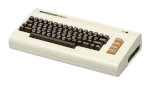

Biografia
Linus Torvalds nasceu no dia 28 de dezembro de 1969 na Finlândia, filho dos jornalistas Anna e Nils Torvalds.
Seu interesse por computadores começou com um Commodore VIC-20. Quando ao 11 anos de idade, seu avô, um matemático e estatístico da Universidade comprou o computador e pediu ajuda para usá-lo.
Poucos anos depois, o curioso adolescente compraria uma máquina da IBM e começaria profissionalmente a mudar os rumos da computação mundial. Em seu livro autobiográfico, Just For Fun, Torvalds diz que foi a impaciência e o fato de nunca estar contente com o sistema que usava que fez com ele criasse o Linux. A primeira versão do programa foi batizada originalmente de Freax , um jogo de palavras com Free e Unix 🔗 - um sistema que precedeu a criação.
Com apenas 22 anos, em 1991, enquanto cursava Ciência da Computação na Universidade de Helsinque, o finlandês Torvalds decidiu compartilhar com amigos e programadores o sistema operacional que havia criado. E entrou para a história.
Torvalds nem sonhava que sua invenção se tornaria tão grande. O programador diz que só criou o sistema por pura diversão e nunca imaginou a fama e o dinheiro que o Linux o daria. "Quando liberei o Linux no outono de 1991 [mais precisamente, em 17 de setembro], eu já vinha programando ao longo de uma boa parte da minha vida, e o fazia por diversão”, disse Torvalds em entrevista a um site.
Linus Torvalds é casado com Tove Torvalds (Monni, de nascimento) — hexacampeã nacional de karatê na Finlândia — a qual ele conheceu no outono de 1993. Linus passava exercícios introdutórios no laboratório de informática para os alunos, e solicitou aos participantes do curso que lhe enviassem um e-mail como teste, no qual ela o convidou para saírem em um primeiro encontro. Mais tarde, Linus e Tove se casaram e tiveram três filhas: Patricia Miranda (nascida em 1996), Daniela Yolanda (nascida em 1998), e Celeste Amanda (nascida em 2000), das quais duas nasceram nos Estados Unidos da América. Linus usa suas datas de nascimento (em hexadecimal) como aceitáveis números mágicos na chamada de reinicialização do núcleo (reboot).
Linux

Linux® é um sistema operacional open source. Ele foi criado em 1991 e começou como um hobby de Linus Torvalds. Quando estava na universidade, Linus queria criar uma versão alternativa, gratuita e open source do sistema operacional MINIX, que era baseado nos princípios e no design do Unix. Desde então, esse hobby se tornou o sistema operacional com a maior base de usuários, o mais usado em servidores da Internet disponíveis ao público e o único usado nos 500 supercomputadores mais rápidos do mundo.
Na verdade, o Linux é parte de um todo, mais precisamente, é um kernel🔗 de código-fonte aberto, que foi — e é desenvolvido — ao longo do tempo graças à colaboração voluntária de desenvolvedores de várias partes do mundo.
Kernel pode ser entendido como o núcleo do sistema operacional, isto é, como a parte essencial deste. Cabe ao kernel fazer a intermediação entre o hardware e os programas executados pelo computador. Isso significa que a junção do kernel mais os softwares que tornam o computador usável (drivers, protocolos de comunicação, entre outros), de acordo com a sua aplicação, é que formam o sistema operacional em si.
Carreira
Torvalds frequentou a Universidade de Helsínquia, entre 1988 e 1996,[7] obtendo um Mestrado em Ciência da Computação a partir do grupo de pesquisa NODES.[8] Sua carreira acadêmica foi interrompida após seu primeiro ano de estudo universitário, quando ele se juntou ao Exército da Finlândia. Lá, ocupa o posto de Segundo Tenente, com o papel de um oficial de cálculo balístico. Em 1990, retoma seus estudos universitários e é exposto ao sistema operacional Unix pela primeira vez, através de um computador DEC MicroVAX com o SO ULTRIX. Sua Dissertação de Mestrado intitula-se Linux: um sistema operacional portátil.
Com 21 anos, sendo cinco já de experiência em programação (em C), ele toma contato com o SO Unix da Universidade (SunOS, atualmente Solaris) e desejava usar a versão de Tannenbaum, o Minix, no seu recém adquirido 80386. Entretanto, descontente com os recursos do Minix, especialmente em relação ao seu emulador de terminal que ele utilizaria para conectar remotamente ao Unix da universidade, começa a desenvolver seu próprio emulador de terminal que não rodaria sobre o Minix, mas sim diretamente no hardware do PC com 80386. Esse projeto pessoal foi sendo modificado gradualmente e adquirindo características de um sistema operacional independente do Minix. Esse é o início do desenvolvimento do núcleo Linux, relatado pelo próprio Linus Torvalds em seu livro Just for fun. O projeto do Linux foi lançado em 1991 em uma famosa mensagem para a Usenet 🔗, em que ele divulga que estava disposto a disponibilizar o código-fonte e contar com a colaboração de outros programadores. Desde os primeiros dias de liberação do Linux à comunidade, ele recebe ajuda de hackers do Minix, e hoje recebe contribuições de milhares de programadores dos mais diversos locais do mundo.
Torvalds trabalhou na Transmeta (fabricante de processadores para portáteis) entre 1997 e 2003, e neste ano juntou-se à Open Source Development Labs (OSDL), fundação criada para ajudar no desenvolvimento do núcleo Linux, como OSDL fellow. Contribuem para essa fundação várias grandes empresas do ramo da informática, como IBM, Oracle e HP.
Linux Foundation
A Linux Foundation (LF) é uma organização sem fins lucrativos voltada para o desenvolvimento e aprimoramento de tecnologias de software livre e de código aberto (open source, na sigla em inglês). O principal projeto mantido pela Linux Foundation é o Kernel Linux.
Fundada em 2000 pela fusão do Open Source Development Labs (OSDL) e o Free Standards Group (FSG), a Linux Foundation patrocina o trabalho do criador do Linux, Linus Torvalds, e é apoiada pelas empresas parceiras no desenvolvimento do Linux (aliança de desenvolvedores), que possui entre elas: Canonical, Red Hat, Google, Intel, AMD, Autodesk, Petrobras, Philips, Samsung, IBM, Adobe, entre outras empresas públicas, privadas, organizações sem fins lucrativos, universidades e desenvolvedores independentes do todo o mundo.
A Linux Foundation promove, protege, e padroniza Linux, "fornecendo um conjunto abrangente de serviços para competir eficazmente com plataformas fechadas".